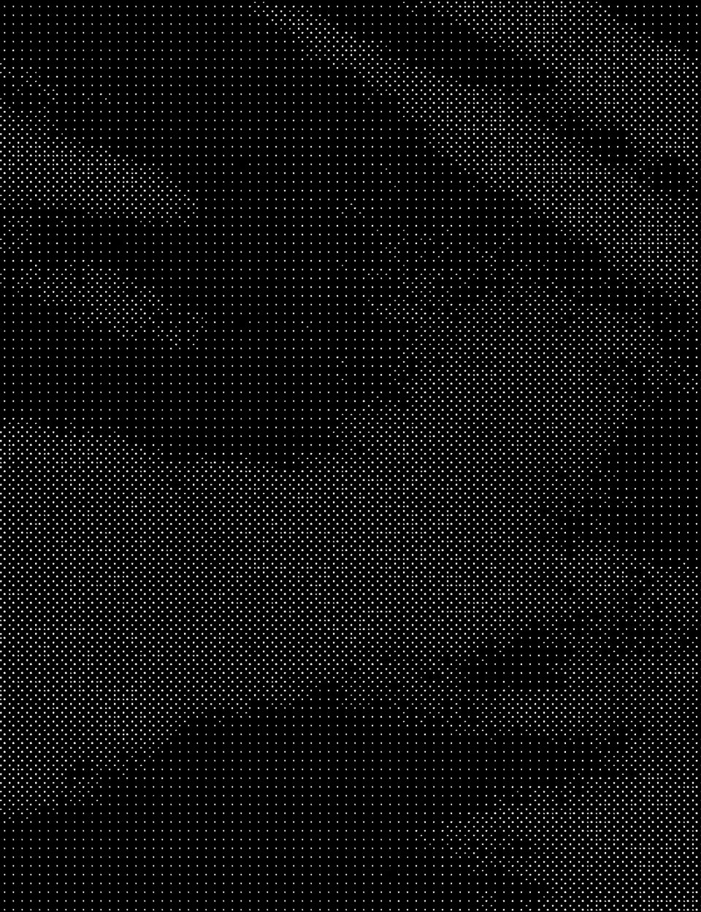
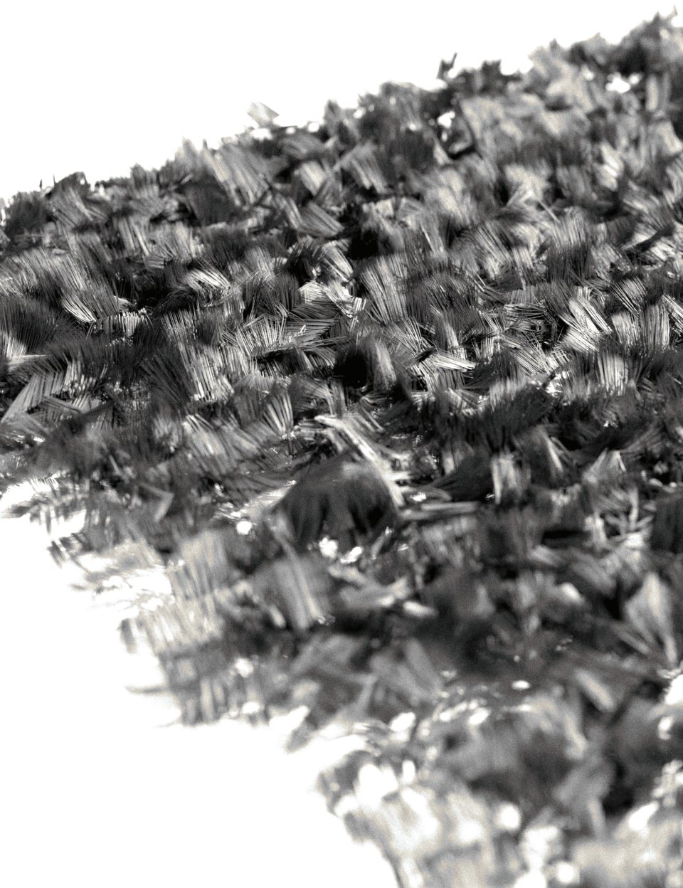
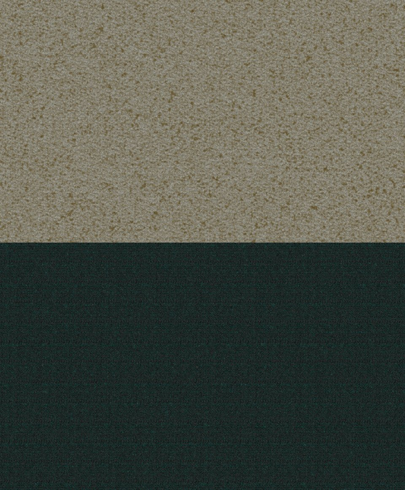
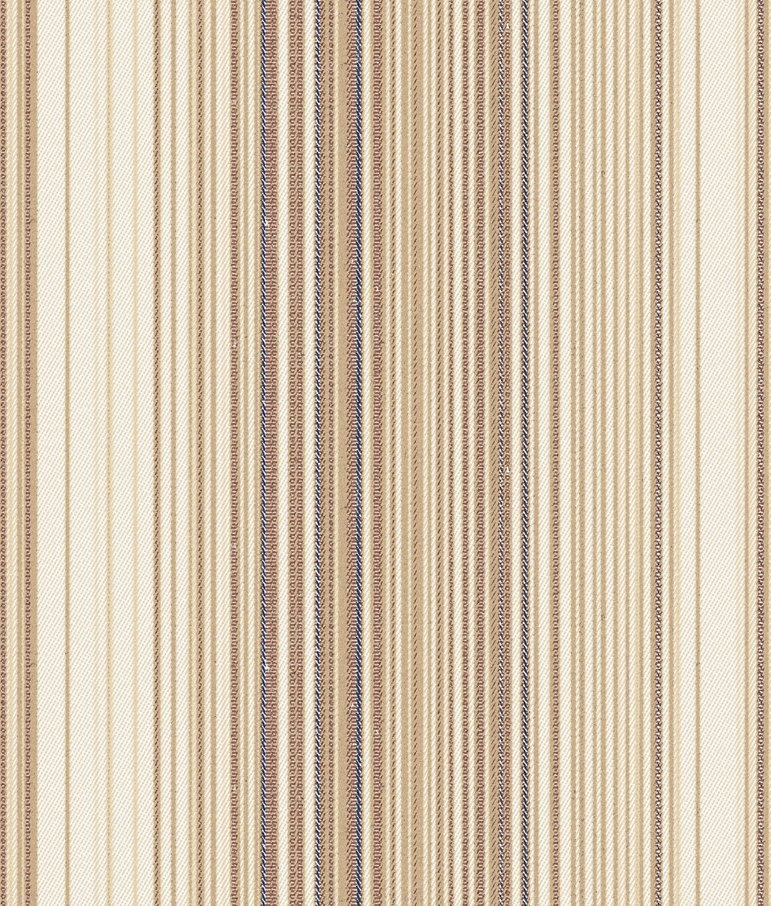
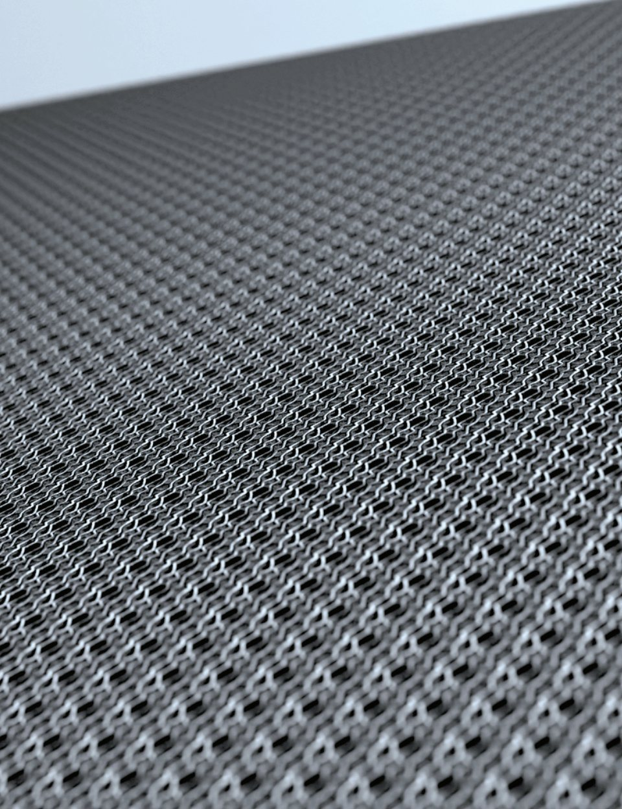
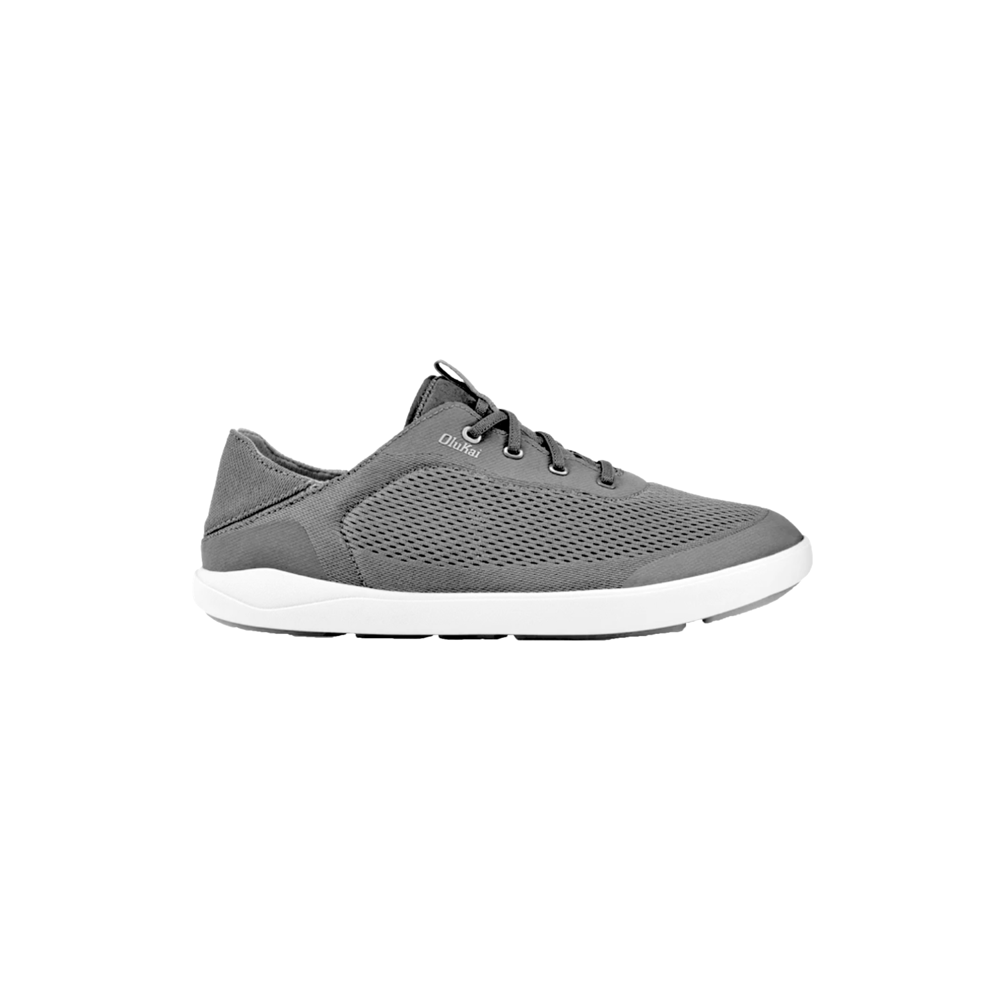

A portfolio of textile and materials development, read in four parts: why a material is wanted, how it is visualized, how it is built, and how it is sourced and delivered. Placeholder copy.
Four parts, one product line of thought. The order matters more than the page count: each part answers the question the last one left open.

Why this material, for whom. Mood, trend and market evidence are collected first and set against what a material can do. Placeholder copy.
Placeholder paragraph. A direction starts with a story and a customer. The first pages gather references and name the feeling the material should carry before any structure is chosen.


Soft. Hand made. Calm.
The concept is drawn, rendered and tested as a surface before anything is made. Placeholder copy.

Placeholder paragraph. Each render is judged on scale, density, direction and the way the surface catches light. The strongest go forward to construction.

Every layer named, numbered and sourced. One product, twenty parts. Placeholder copy.

The work after the design is approved: which supplier, in what quantity, by what date, at what cost. Placeholder copy.
Placeholder paragraph. A schedule and a cost line show how a decision on paper becomes cloth on a dock, and who is waiting on whom at each step.